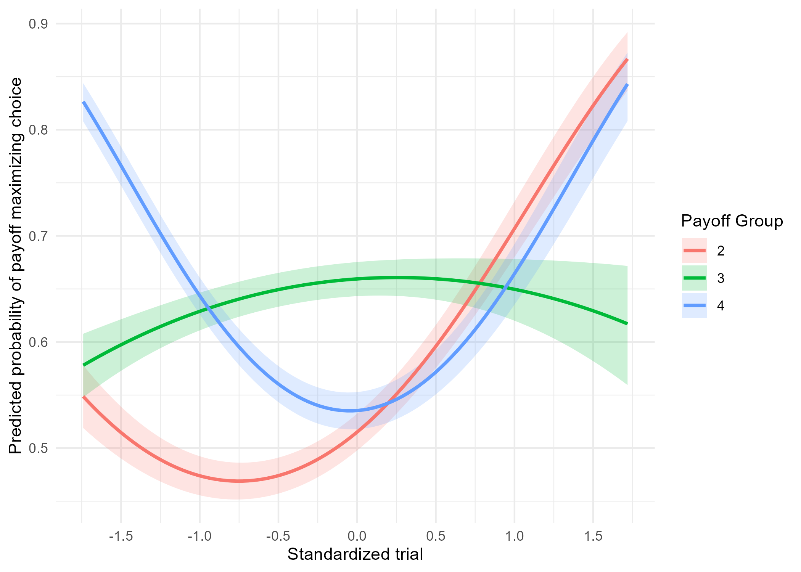
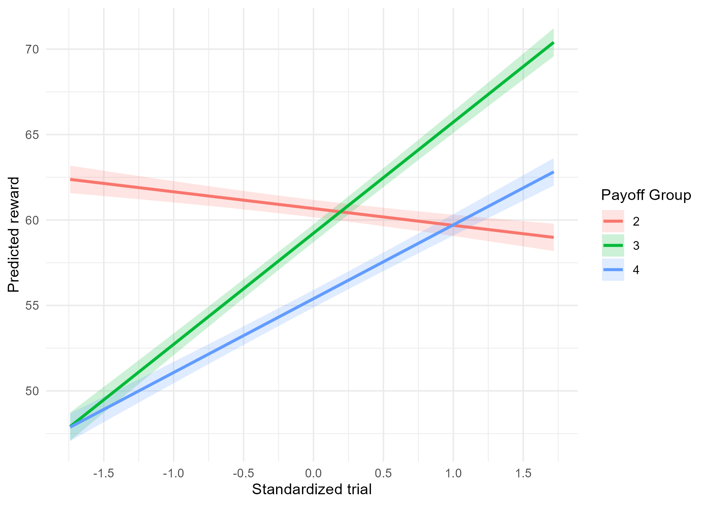
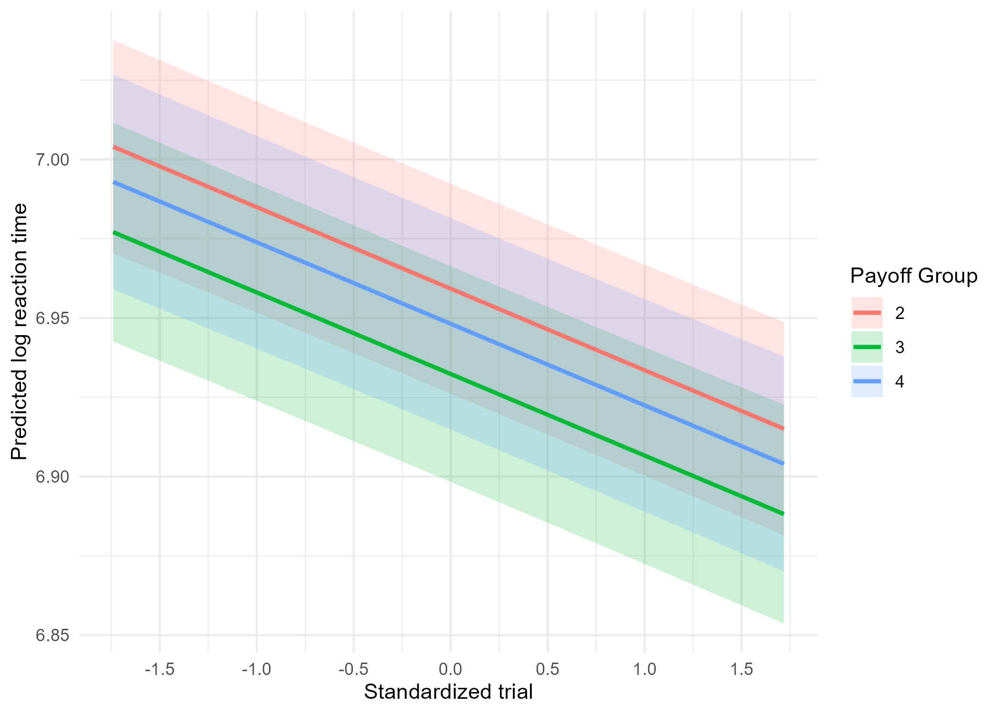
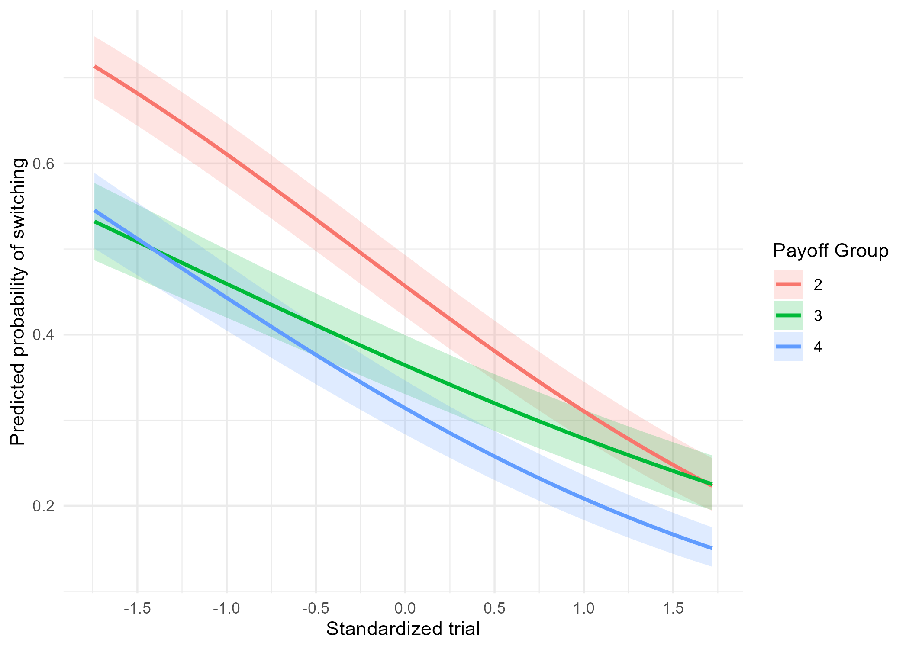

Overview
This project investigates how human behavior changes across repeated trials in a dynamic four-arm restless bandit task. Using trial-level behavioral data, the analysis examines changes in payoff-maximizing choice, obtained reward, reaction time, and choice switching across the trial sequence.
The primary analysis uses logistic mixed-effects modeling to characterize changes in the probability of selecting the highest-payoff option while accounting for individual differences in baseline behavior and behavioral trajectories. The analysis focuses on observable behavioral adaptation rather than estimating latent reinforcement-learning parameters.
The project combines mixed-effects modeling, model comparison, robustness analysis, and reproducible computational workflows.
Research Question
How does behavioral performance evolve across repeated trials in a dynamic reward environment, and to what extent do individuals differ in their behavioral trajectories?
Data & Methods
The analysis used the publicly available Bahrami2020 four-arm restless bandit dataset. The original dataset contains behavioral observations from 975 participants performing a four-arm bandit task with 150 trials per participant. Each trial includes participant choice, obtained reward, reaction time, and trial-specific payoff information for the four available options.
After preprocessing, 965 participants and 139,816 trial-level observations were retained for analysis. Choice-switching analyses used fewer observations because switching cannot be defined for trials without a preceding observed choice. The raw dataset was preserved unchanged, and all preprocessing operations were implemented programmatically.
The primary outcome was payoff-maximizing choice, defined as whether the participant selected the option with the highest payoff on a given trial. A logistic mixed-effects model incorporated linear and quadratic trial effects, payoff-group interactions, and participant-specific random intercepts and slopes. Secondary analyses examined obtained reward, log-transformed reaction time, and choice switching using linear or logistic mixed-effects models as appropriate.
Candidate models were evaluated using AIC, BIC, log-likelihood, and likelihood-ratio tests where appropriate. Robustness analyses compared alternative random-effects structures and linear versus quadratic representations of trial-related change.
Key Findings
- The probability of selecting the payoff-maximizing option changed nonlinearly across trials.
- The quadratic model provided substantially better fit than the corresponding linear model.
- The quadratic model with correlated random effects was preferred over the uncorrelated specification based on both AIC and BIC.
- Participants selected the payoff-maximizing option on 61.35% of trials.
- The primary model showed positive linear (β = 0.492, p < .001) and quadratic (β = 0.327, p < .001) trial components.
- Trial trajectories differed across payoff groups, with some environments showing flattening or declining trajectories and others showing stronger acceleration.
- Obtained reward decreased across trials (β = −0.981, p < .001) with significant trial-by-payoff-group interactions.
- Log-transformed reaction time decreased across trials (β = −0.0257, p < .001).
- Choice switching decreased across trials (β = −0.625, p < .001), with trajectories differing across payoff groups.
Figures

Figure 1. Model-implied probability of selecting the payoff-maximizing option across trials and payoff groups.

Figure 2. Trial-related trajectory of obtained reward across payoff groups.

Figure 3. Trial-related trajectory of log-transformed reaction time across payoff groups.

Figure 4. Trial-related trajectory of choice-switch probability across payoff groups.
Limitations
- Reliance on an existing observational dataset limits experimental control over task design and measurement.
- The analysis focuses on observable behavioral outcomes rather than directly estimating latent reinforcement-learning mechanisms.
- Payoff-maximizing choice does not uniquely identify the cognitive or computational process generating behavior.
- Quadratic trial terms describe nonlinear trajectories but should not be interpreted as evidence for a specific learning mechanism.
- The analysis is based on a single restless bandit paradigm and may not generalize to other reinforcement-learning tasks or decision environments.
- Model selection focused on statistical fit and robustness rather than direct comparison among competing computational theories.
Next Steps
Future work will extend the behavioral analysis toward explicit computational models of reinforcement learning and decision making, including hierarchical Bayesian reinforcement-learning models, trial-by-trial parameter estimation, and formal comparison of alternative learning and choice mechanisms.